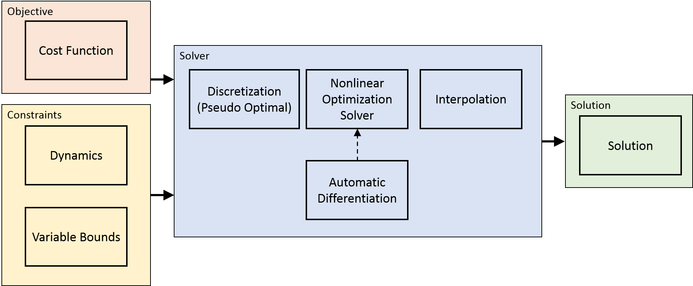

Research
Precise motion control is desired in a variety of industrial robot applications. In order to achieve precise and rapid rest-to-rest motion, the overshoot and the residual vibration caused by flexibility of robots should be minimized. To make robot motion more accurate, vibration suppression and control of flexible joint robot problems are introduced in this research. Furthermore, considering these control problems can be addressed using more general optimal control approach, an efficient numerical method for optimal control is presented not only to dress motion control problems, but also other applications like motion planning.
Vibration Suppression
This work try to suppress vibration for robot with flexible payload. A modified input shaping technique, which is designed to work without slowing the motion, is implemented in this work. Acceleration at the end tip of payload shows the performance of the vibration suppression.
 |
Motion Control of Flexible Joint Robot
This work try to improve trajectory tracking accuracy of flexible joint robot. A MATLAB/SimMechanics simulator for 6-joint robot is developed. Joint flexibility effect is also considered in this simulator that simulates robot dynamics. For very soft joint, the solution is implementing a multiple sliding surface controller (MSSC) that takes advantage of the model of robot dynamics and sensing from actuator and robot joints/links.
Efficient Numerical Method for Optimal Control
A variety of control problems can be formulated and solved as optimal control problem. However, it is difficult to implement numerical control in practice due to two reasons. One reason is that no simple analytical solution exists for general nonlinear optimal control problems. Another reason is that the computational load for numerical solution is typically heavy. In this work, efficient numerical method is developed for general nonlinear optimal control problems. Potential applications of this work include control of underactuated systems, trajectory and motion planning of robot manipulators, and so on.
|  |
Example: Quadrotor Flipping
Example: Motion Planning of 2 Link Planar Robot
Example: Motion Planning of 6 Joint Robot, using CasADi and CppAD respectively